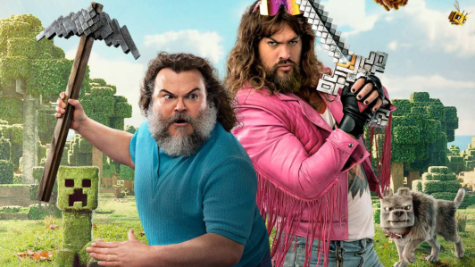
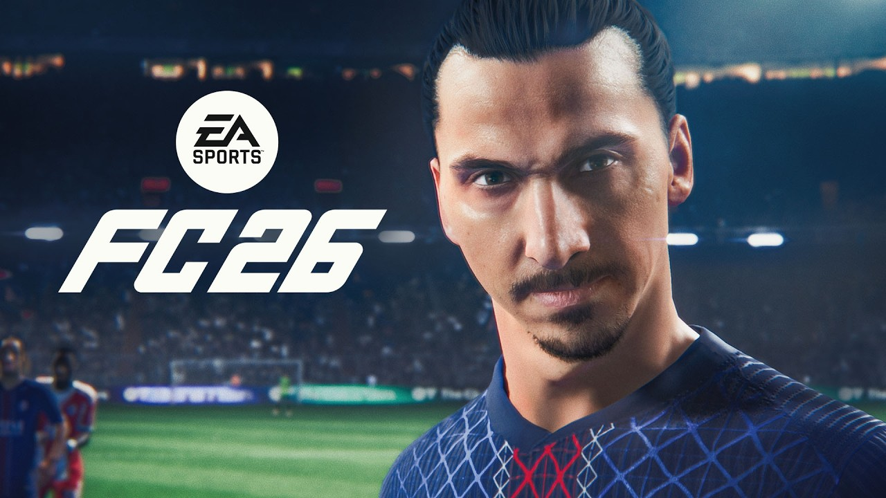

Rockstar Games revela novo capítulo da franquia GTA com protagonistas inéditos e cenário vibrante

A Rockstar Games divulgou oficialmente o próximo título da série Grand Theft Auto, trazendo dois protagonistas em destaque e um cenário inspirado em Miami, com forte clima tropical. O jogo promete gráficos aprimorados, narrativa envolvente e liberdade ainda maior para os jogadores explorarem o mundo aberto. A revelação aumentou a expectativa da comunidade gamer, consolidando o lançamento como um dos mais aguardados da década.
"Um Filme Minecraft" ganha data de estreia no streaming; saiba quando
A aguardada adaptação cinematográfica de Minecraft finalmente tem data para chegar ao streaming. O longa, que mistura ação e fantasia no universo dos blocos, será lançado na plataforma ainda este ano. Com um elenco de peso e efeitos visuais que recriam fielmente o estilo do jogo, a produção promete agradar tanto aos fãs antigos quanto ao público mais jovem. O anúncio reforça o impacto cultural de Minecraft, consolidando-o também nas telonas.
EA Sports anuncia lançamento oficial de FIFA 26 com novidades no Modo Carreira e Ultimate Team
A EA Sports confirmou a chegada do FIFA 26, trazendo melhorias gráficas, jogabilidade mais realista e novidades aguardadas pelos fãs. Entre os destaques estão o Modo Carreira repaginado, maior imersão no ambiente dos estádios e recursos inéditos no Ultimate Team, que ganha novas formas de personalização. O game chega às principais plataformas ainda este ano e promete ser o título mais completo da franquia até agora.